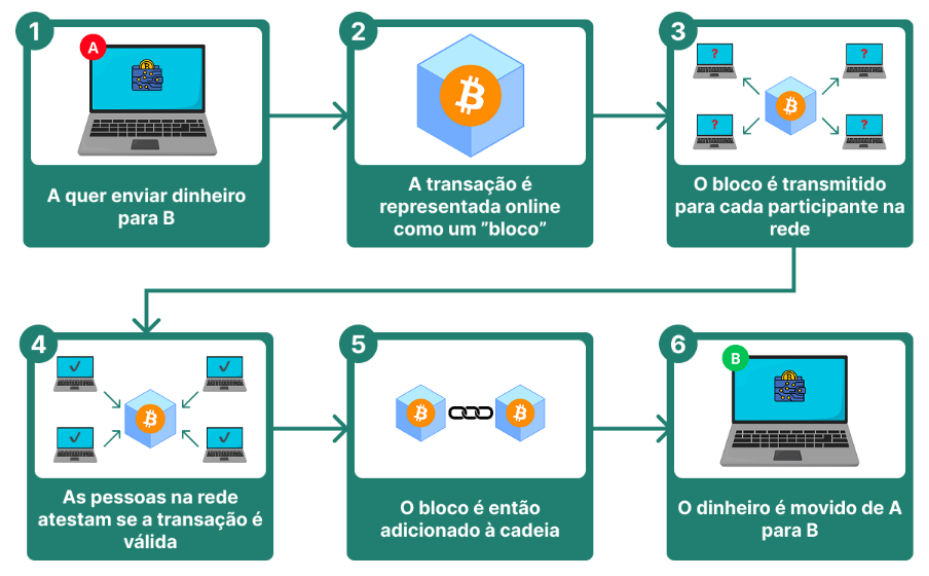
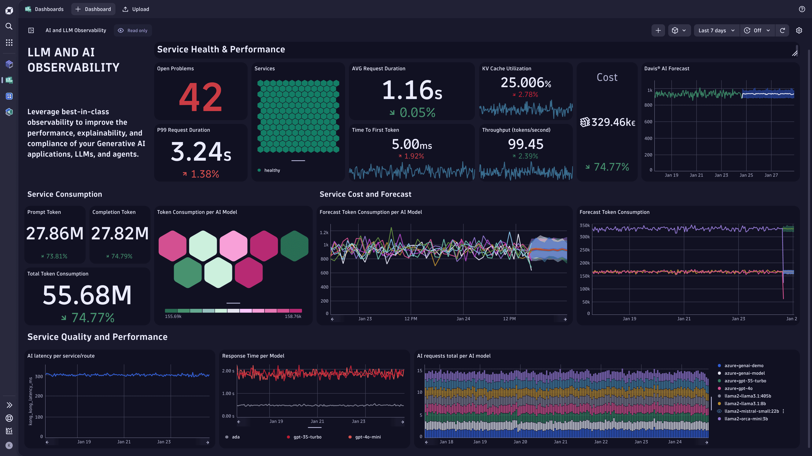
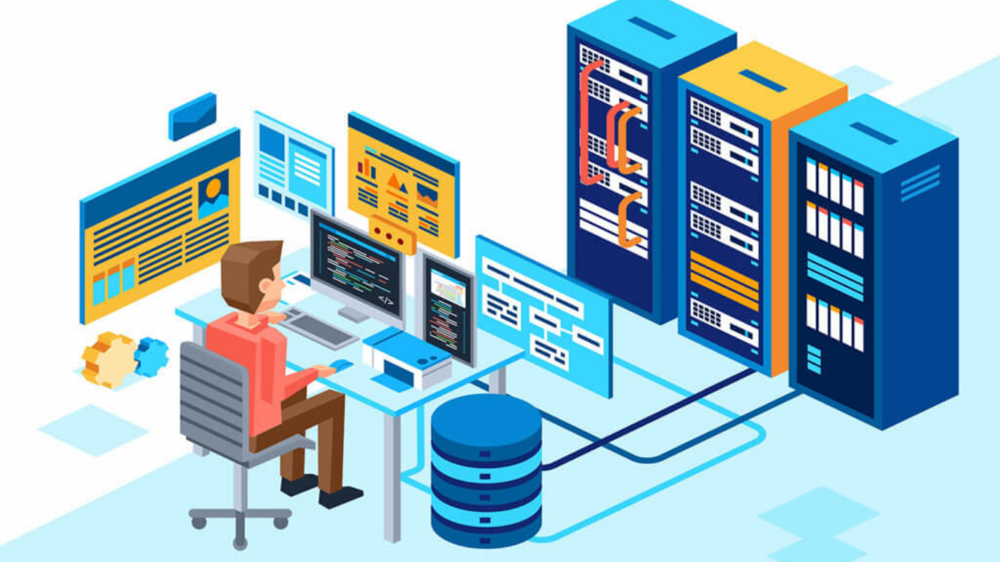
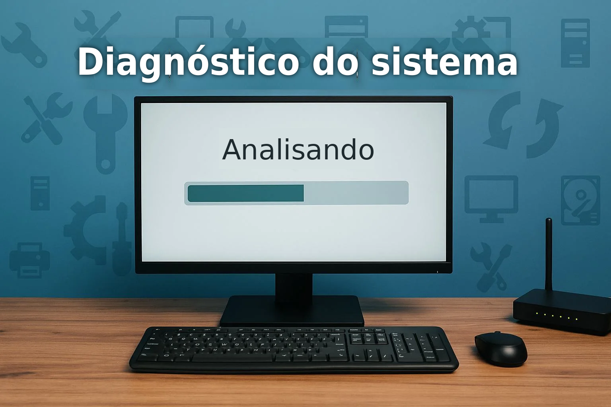
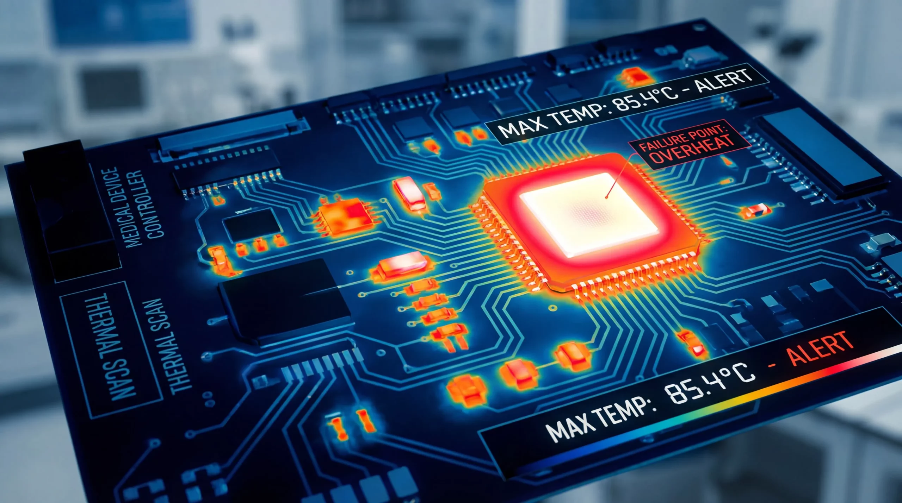

Antes de monitorar, é preciso entender
BLOCKCHAIN
É uma infraestrutura que atua como um banco de dados descentralizado, distribuído e imutável,
conectado a vários computadores, tornando-o resistente a adulterações. Registra transações em bloco,
onde cada bloco se conecta um com o outro de maneira cronológica e segura, que permite o registro de
transações e rastreamentos de ativos. É a base para garantir a integridade de moedas digitais, como
Bitcoin e Ethereum.
Os blocos são informações sobre as atividades realizadas em uma blockchain. São separados em duas partes principais: o corpo e o cabeçalho do bloco, que é responsável pela segurança, validação e conexão cronológica do dado, trazendo hash do bloco anterior, raíz de merkle que representa matematicamente as transações daquele bloco, o momento exato do registro do bloco, a versão do bloco ou do protocolo da blockchain e o identificador de dificuldade para determinar o quão difícil é encontrar o hash correto para o bloco naquele momento da rede. Já o corpo foca no armazenamento dos dados, contendo a lista de transações válidas e verificadas que ocorreram no período de criação do bloco, endereços e chaves públicas das carteiras de origem e destino de cada operação, quantidade de moedas ou tokens movimentados (valores) e as taxas de transação.

PROBLEMAS
Diagnóstico do sistema
Em ambientes com múltiplos equipamentos, não há uma forma unificada de acompanhar métricas de CPU, GPU, memória, armazenamento, rede e disponibilidade, o que dificulta a identificação rápida da origem de um problema quando ele ocorre.
Identificação tardia
Sem um monitoramento contínuo, irregularidades como queda de hashrate, superaquecimento ou perda de conexão só são percebidas depois que já geraram impacto na operação, resultando em perda de desempenho e redução direta dos ganhos com a mineração.
Consumo energético demasiado
A ausência de métricas organizadas impede que o responsável pela operação identifique componentes com consumo desbalanceado ou baixo rendimento, dificultando decisões que poderiam reduzir custos e melhorar a eficiência da infraestrutura.
Nossas soluções


Conheça o Asic
Conheça a GPU
Conheça o MiningRig
O QUE MONITORAMOS?
Temperatura
Temperatura
Temperatura
Temperatura
Temperatura
Temperatura
Como funciona?

